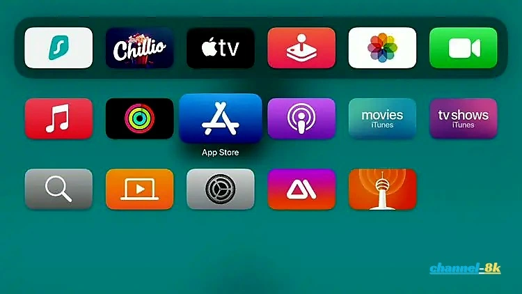
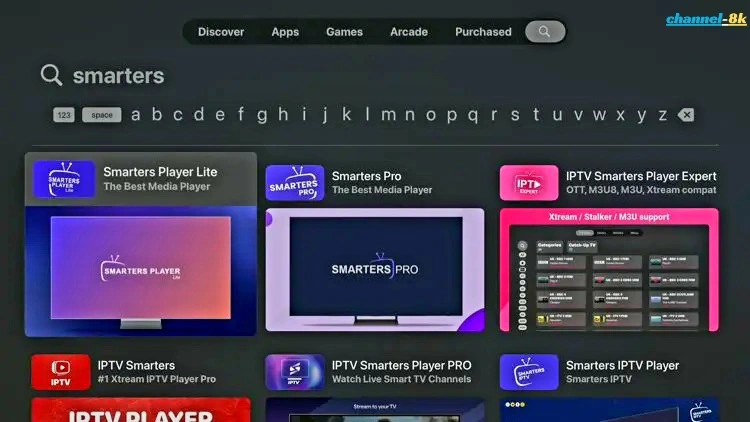
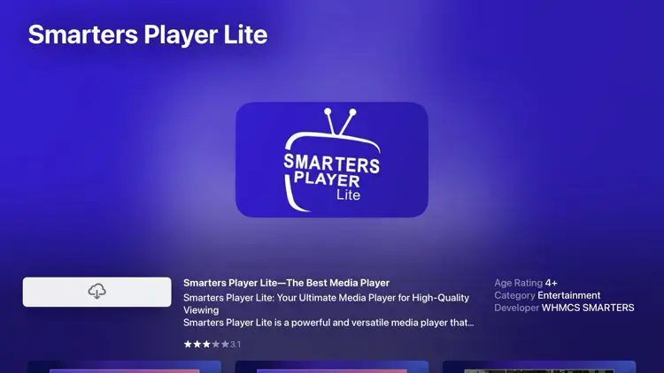
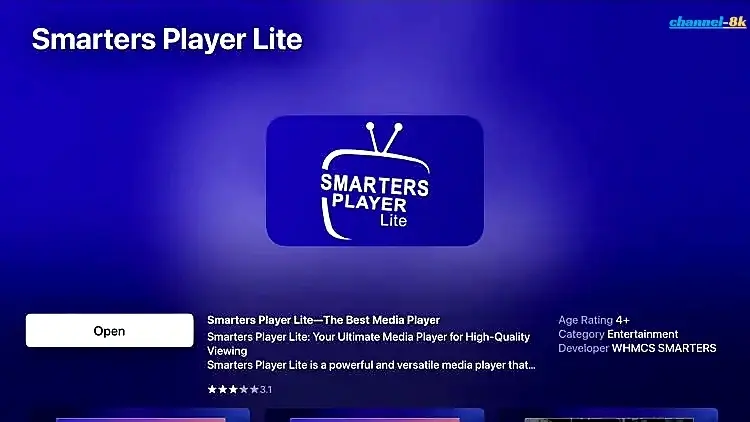
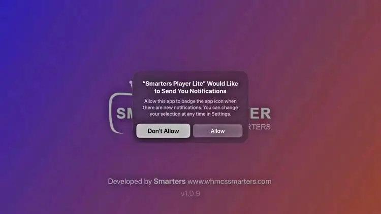
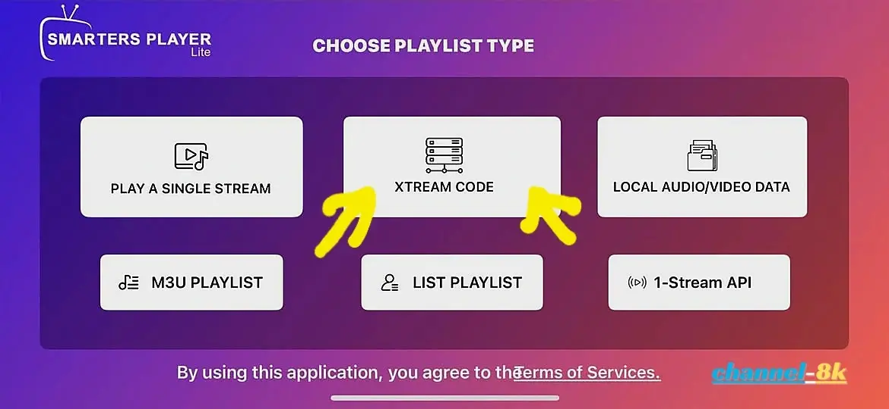
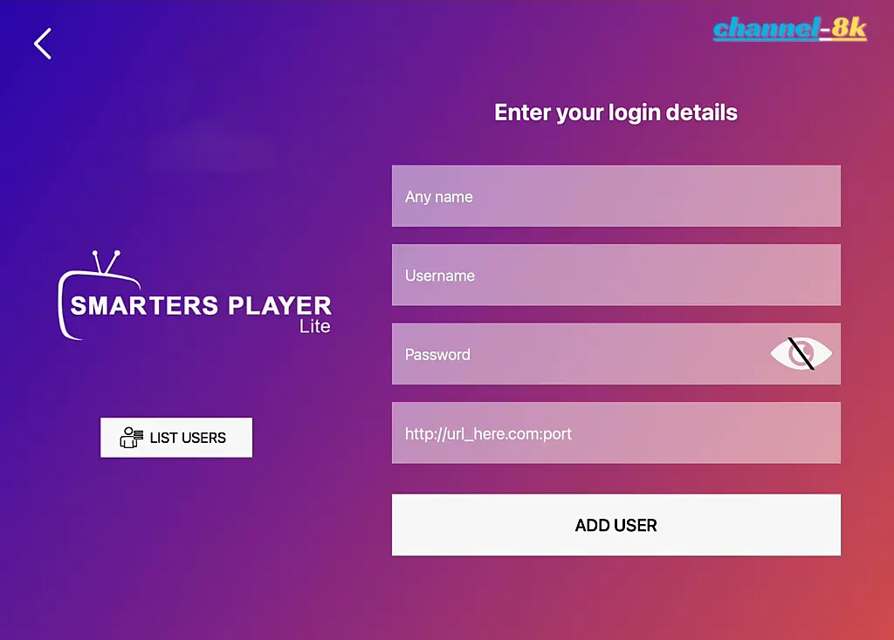
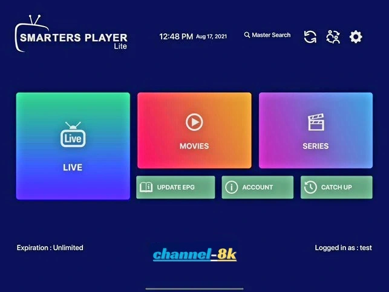
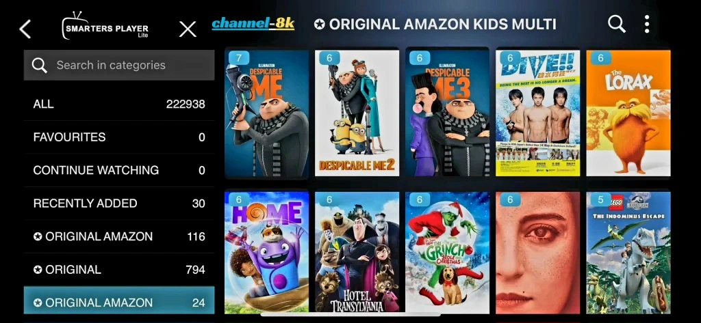

How to Install IPTV Smarters on Apple TV (Xtream Codes API Guide 2026)
Looking for an easy way to install IPTV Smarters on Apple TV? This step-by-step guide will show you exactly how to set up Smarters Player Lite using the Xtream Codes API for a smooth streaming experience.
Using a Firestick instead? Check out the Firestick installation guide here.
Why Use IPTV Smarters on Apple TV?
IPTV Smarters is one of the most popular IPTV players thanks to its clean interface, fast performance, and support for live TV, movies, and series. When installed on Apple TV, it provides a premium viewing experience on the big screen.
Requirements Before Installation
- An Apple TV device (Apple TV HD or 4K)
- Access to the App Store
- IPTV subscription with Xtream Codes API details (Username, Password, Server URL)
-
Step 1: Open App Store on Apple TV
From your Apple TV home screen, launch the App Store.

-
Step 2: Search for IPTV Smarters
Use the search option and type “Smarters” or “IPTV Smarters”. Select Smarters Player Lite from the results.

-
Step 3: Download Smarters Player Lite
Click the download/install button and wait for the app to install.

-
Step 4: Open the App
After installation, click Open to launch the app.

-
Step 5: Handle Permissions
If a permissions message appears, select “Don’t Allow” to continue.

-
Step 6: Select Xtream Codes API Login
On the login screen, choose Login with Xtream Codes API.

-
Step 7: Enter IPTV Credentials
Enter your IPTV service details (Username, Password, and Server URL). Then click Add User.

-
Step 8: Installation Complete
Your IPTV Smarters app is now fully set up on Apple TV.

-
Step 9: Start Watching IPTV
Browse categories and select any channel to start streaming in full screen.

Final Thoughts
Installing IPTV Smarters on Apple TV using Xtream Codes API is quick and beginner-friendly. Once set up, you can enjoy live TV, movies, and series with a smooth and reliable interface.